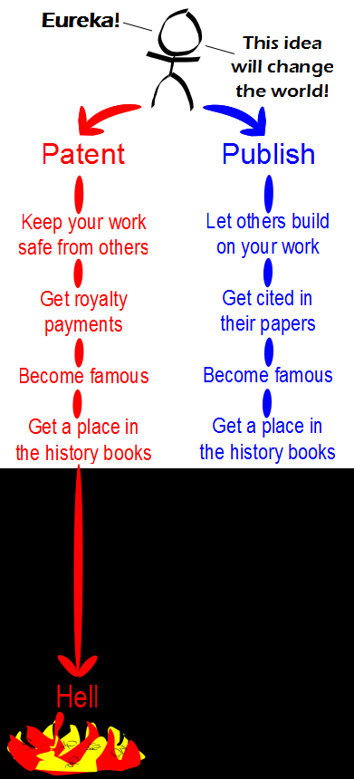

Comic JK 737
When I Feel Like It
⇤
<
?
>
⇥

⇤
<
?
>
⇥
Forum
.
RSS
.
Digg
.
Facebook
.
Reddit
.
Twitter
.
Stumbleupon
Enter your thoughts on number 737 here. Please, no spamming, trolling, phreaking, or patenting. You missed one, just before "Become Famous." Red: Live in comfort; Blue: Family starves. We know that Steve Jobs and Bill Gates are going to Hell. >You can't say you didn't suspect >>though I'm not a fan of either man per se, one does have to question the sense of perspective that makes people jump to naming those two as someone "going to Hell", rather than a dictator or serial killer or some such... >>>don't worry, the latter mentioned dictators and serial killers aren't off the hook, just not mentioned here as their work doesn't really apply...just saying. >>>>Who's to say that they're not secretly dictators or serial killers? One problem - can corporate researchers be blamed for the fallacies of capitalism? The only way you can recoup your research expenses is to patent the result and sell it. Grant-funded research is a brilliant thing, but it's severely limited - anything that requires a lot of money - pharmaceuticals, robotics - can't be developed in the financially limited environment of academic research. Is corporate research ideal? Hell no, but capitalism won, communism lost, and, within the confines of a capitalist society, that's how expensive research gets done. That said, there's a drug that treats an illness about 20 people in Canada have - treatment costs about half a million a year, because less than 1 in a million people have the illness and the research royalties are borne by the consumer. Clearly a broken system. >>Im sorry, but how is this a broken system? >tl;dr, >The company could always cut their losses and license the patent. The problem with the patent system isn't so much the "get royalty payments" part, but the "keep your work safe from others" part, which implies "keep your work safe from others, never do anything with it, and litigate the hell out of anyone that tries". >>For 20 some odd years. >>>Usually it's more "keep your work safe from others because you want to recover development costs so you can develop the next, better version" - if you make it public domain right away, everyone else can just manufacture it at a fraction the cost (hence name brand pharmaceuticals are so much more expensive than their competition). The "do nothing with it and litigate like mad" part comes from a combination of "I thought this was useful and I don't remember why" and "I have lawyers on retainer and they get bored when I don't give them stuff to do." I do have to agree that the 20 year latency on publicizing inventions is extreme, though, especially for things like US 5255452 (An example used in my ethics/law class during my engineering degree - a patent on a "Method and means for creating an anti-gravity illusion") The lag time also delays progress, since you often can't improve on a technology without being allowed to make it and tinker. > Why is academic research financially limited? >> Because money is valuable. People only invest large sums of money in things they think they can get a profit in. Academic research does not directly produce an income, and thus does not make a good investment. Hence my earlier statement that capitalism is flawed - success comes from being a selfish bastard. >If only scientists are half as good as Jehovah's witness or Scientology, we can manipulate people into funding scientific research. Surely, scientists will be able to research eternal life some day, and it's only for those people who wait ;) For sure more engineers in hell than physicists. More chemists than archaeologists, more meteorologists than volcanologists, and definitely more biogeneticists than botanists. Geologists are split 50/50. Aside: Which professions are more likely to even believe in hell in the first place? Ans: engineers ^^The above is only my personal opinion as a Physics major and high school physics teacher who can barely pay the bills. If I only would have sold my soul for a higher paying profession----like engineering. There still is time. Mephistopholes are you there?^^ (In all of this I am trying to be funny people!) ^^Not as concerned enough about "true science" to see the light (or hide from it) >>>and are these "engineers", as defined by recognised qualification and/or professional certification... ? or people who call themselves "engineers" because they tinker with some machine occasionally... ? ( e.g.: in some locations, the sales droids sent round to fit satellite TV systems get labelled as "engineers"... ) ^^engineering majors or physics majors who are qualified professionals. >>>>Hate to burst your bubble, mate, but the only difference between a scientist and an engineer is that engineers use existing science and scientists work on developing new stuff (for us to use) >>>>>And better paychecks. >Engineers always were more practical. >>for some reason, this reminds me of an old Rowan Atkinson sketch in which he plays the Devil - "but you can call me Toby" - welcoming new entrants to Hell... I won't give away the punchline: the sketch should be watched, not described... Patents should be reserve-able only by people that are actually trying to make the patented object. >That is indeed the spirit of patent law. Lawyers eat spirits for breakfast, however, so that's not how it actually works. >>And the rest of us drink spirits with lunch. y so socialist? >y so blind? >>y use y instead of why? every time you use letters in places of words, Al Qaeda wins! I just swallowed my gum. Your mother has 43 patents relating to seducing dorky college boys.